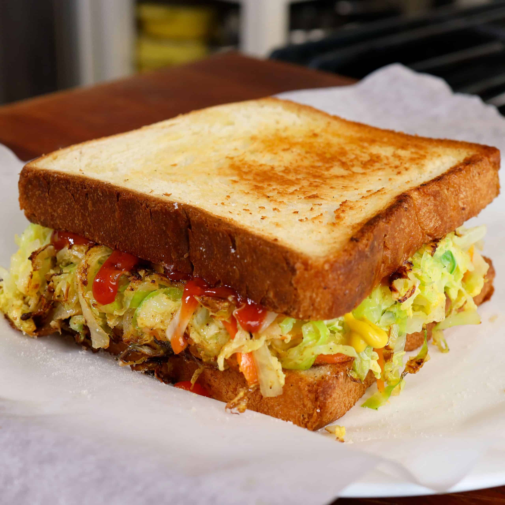

Korean Street Toast

Description
Korean Street Toast is a fun dish usually found at roadside street vendors
Ingredients
- 2 slices of Bread
- 2 Eggs
- 2 slices of American Cheese
- 4 slices of Turkey Bacon
- Mayonnaise
- Ketchup
Steps
- Beat the egg and season it with salt and pepper
- Heat a skillet on medium-high heat and add oil
- Add the egg and lightly swirl it around the skillet until it forms a round shape. Allow the egg to cook slightly
- While the center is still wet, place 2 pieces of bread in the pan on top of the eggs. Gently release the eggs from the edge of the pan and carefully flip the egg and bread in the pan
- Place the cheese and turkey bacon on the egg. Add the mayonnaise and ketchup to your liking
- Fold the egg and bread over and continue cooking until the bread is golden brown. Enjoy!
Home Page